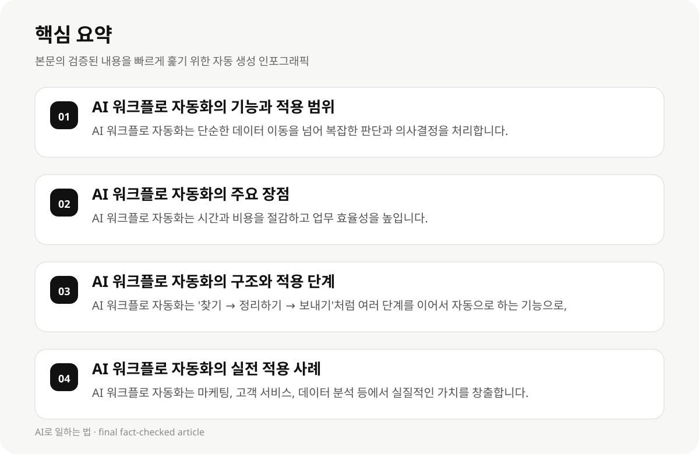

AI 워크플로 자동화의 기능과 적용 범위 #
AI 워크플로 자동화는 단순한 데이터 이동을 넘어, 판단, 요약, 추출, 의사결정 등 AI가 직접 처리하는 복잡한 작업을 자동화합니다. 이 기술은 프리랜서와 1인 사업가에게 특히 유용하며, 비즈니스 운영의 효율성과 자율성을 높이는 데 기여합니다.
IBM의 AI 워크플로 자동화는 조직 내 활동을 간소화하고, AI 에이전트를 사용하여 다중 에이전트 워크플로를 구축할 수 있도록 지원합니다. 이는 데이터의 정확성과 품질, AI 에이전트의 성능, 기업의 기술력과 인프라에 따라 달라질 수 있습니다.
- AI 워크플로 자동화는 단순한 데이터 이동을 넘어 복잡한 판단과 의사결정을 처리합니다.
- IBM의 AI 워크플로 자동화는 AI 에이전트를 사용하여 다중 에이전트 워크플로를 구축할 수 있습니다.
- AI 워크플로 자동화는 기업의 기술력과 인프라에 따라 달라질 수 있습니다.
AI 워크플로 자동화의 주요 장점 #
AI 워크플로 자동화는 시간과 비용을 절감하고, 프리랜서의 업무 효율성을 높입니다. 이는 복잡한 작업을 자동화하여, 인력의 집중을 가능하게 합니다.
AI 워크플로 자동화는 기존의 Zapier 방식의 자동화와 차별화되며, AI 에이전트가 작업을 계획하고 실행하여 처음부터 끝까지 처리합니다. 이는 데이터의 정확성과 품질, AI 에이전트의 성능, 기업의 기술력과 인프라에 따라 달라질 수 있습니다.
- AI 워크플로 자동화는 시간과 비용을 절감하고 업무 효율성을 높입니다.
- AI 워크플로 자동화는 기존의 Zapier 방식의 자동화와 차별화되며, AI 에이전트를 사용하여 작업을 처리합니다.
- AI 워크플로 자동화는 데이터의 정확성과 품질, AI 에이전트의 성능, 기업의 기술력과 인프라에 따라 달라질 수 있습니다.
AI 워크플로 자동화의 구조와 적용 단계 #
AI 워크플로 자동화는 '찾기 → 정리하기 → 보내기'처럼 여러 단계를 이어서 자동으로 하는 기능으로, 코드를 몰라도 작업을 수행할 수 있습니다. 이는 프리랜서가 복잡한 작업을 간단하게 처리할 수 있도록 도와줍니다.
AI 워크플로 자동화의 구조는 사용자 입력을 받고, AI 에이전트가 작업을 계획하고 실행하여 처음부터 끝까지 처리합니다. 이는 프리랜서가 복잡한 작업을 간단하게 처리할 수 있도록 도와줍니다.
- AI 워크플로 자동화는 '찾기 → 정리하기 → 보내기'처럼 여러 단계를 이어서 자동으로 하는 기능으로, 코드를 몰라도 작업을 수행할 수 있습니다.
- AI 워크플로 자동화의 구조는 사용자 입력을 받고, AI 에이전트가 작업을 계획하고 실행하여 처음부터 끝까지 처리합니다.

AI 워크플로 자동화의 실전 적용 사례 #
AI 워크플로 자동화는 다양한 산업에서 실질적인 가치를 창출하고 있습니다. 예를 들어, 마케팅, 고객 서비스, 데이터 분석 등에서 AI 에이전트가 작업을 처리하여 시간과 비용을 절감하고, 업무 효율성을 높입니다.
IBM의 AI 워크플로 자동화는 조직 내 활동을 간소화하고, AI 에이전트를 사용하여 다중 에이전트 워크플로를 구축할 수 있도록 지원합니다. 이는 프리랜서가 복잡한 작업을 간단하게 처리할 수 있도록 도와줍니다.
- AI 워크플로 자동화는 마케팅, 고객 서비스, 데이터 분석 등에서 실질적인 가치를 창출합니다.
- IBM의 AI 워크플로 자동화는 조직 내 활동을 간소화하고, AI 에이전트를 사용하여 다중 에이전트 워크플로를 구축할 수 있도록 지원합니다.
AI 워크플로 자동화의 한계와 실패 사례 #
AI 워크플로 자동화는 기존의 자동화(Zapier 방식)과 차별화되지만, AI 에이전트의 성능과 정확도에 따라 결과가 달라질 수 있습니다. 이는 프리랜서가 복잡한 작업을 간단하게 처리할 수 있는 기회를 제공하지만, 성공을 위해서는 정확한 데이터와 적절한 설정이 필요합니다.
AI 워크플로 자동화는 단순한 데이터 이동을 넘어 복잡한 판단과 의사결정을 처리해야 하므로, 데이터의 정확성과 품질이 매우 중요합니다. 이는 프리랜서가 복잡한 작업을 간단하게 처리할 수 있는 기회를 제공하지만, 성공을 위해서는 정확한 데이터와 적절한 설정이 필요합니다.
- AI 워크플로 자동화는 AI 에이전트의 성능과 정확도에 따라 결과가 달라질 수 있습니다.
- AI 워크플로 자동화는 데이터의 정확성과 품질이 매우 중요합니다.
AI 워크플로 자동화의 비용 및 시간 관점 #
AI 워크플로 자동화는 시간과 비용을 절감하고, 프리랜서의 업무 효율성을 높입니다. 이는 복잡한 작업을 자동화하여, 인력의 집중을 가능하게 합니다.
AI 워크플로 자동화는 기존의 자동화(Zapier 방식)과 차별화되며, AI 에이전트가 작업을 계획하고 실행하여 처음부터 끝까지 처리합니다. 이는 데이터의 정확성과 품질, AI 에이전트의 성능, 기업의 기술력과 인프라에 따라 달라질 수 있습니다.
- AI 워크플로 자동화는 시간과 비용을 절감하고 업무 효율성을 높입니다.
- AI 워크플로 자동화는 기존의 자동화(Zapier 방식)과 차별화되며, AI 에이전트가 작업을 계획하고 실행하여 처음부터 끝까지 처리합니다.
AI 워크플로 자동화의 성공 요소 #
AI 워크플로 자동화의 성공 요소는 데이터의 정확성과 품질, AI 에이전트의 성능, 기업의 기술력과 인프라에 따라 달라질 수 있습니다. 이는 프리랜서가 복잡한 작업을 간단하게 처리할 수 있는 기회를 제공하지만, 성공을 위해서는 정확한 데이터와 적절한 설정이 필요합니다.
AI 워크플로 자동화는 기업의 기술력과 인프라에 따라 달라질 수 있으므로, 전략적 계획이 필요합니다. 이는 프리랜서가 복잡한 작업을 간단하게 처리할 수 있는 기회를 제공하지만, 성공을 위해서는 전략적 계획이 필요합니다.
- AI 워크플로 자동화의 성공 요소는 데이터의 정확성과 품질, AI 에이전트의 성능, 기업의 기술력과 인프라에 따라 달라질 수 있습니다.
- AI 워크플로 자동화는 전략적 계획이 필요합니다.
AI 워크플로 자동화의 모델 및 수익 가능성 #
AI 워크플로 자동화는 비즈니스 성장, 자동화 플랫폼, AI 에이전트 서비스 등 다양한 형태의 수익 모델을 제공합니다. 이는 프리랜서가 복잡한 작업을 간단하게 처리할 수 있는 기회를 제공하지만, 성공을 위해서는 전략적 계획이 필요합니다.
AI 워크플로 자동화는 기업의 기술력과 인프라에 따라 달라질 수 있으므로, 전략적 계획이 필요합니다. 이는 프리랜서가 복잡한 작업을 간단하게 처리할 수 있는 기회를 제공하지만, 성공을 위해서는 전략적 계획이 필요합니다.
- AI 워크플로 자동화는 비즈니스 성장, 자동화 플랫폼, AI 에이전트 서비스 등 다양한 형태의 수익 모델을 제공합니다.
- AI 워크플로 자동화는 전략적 계획이 필요합니다.